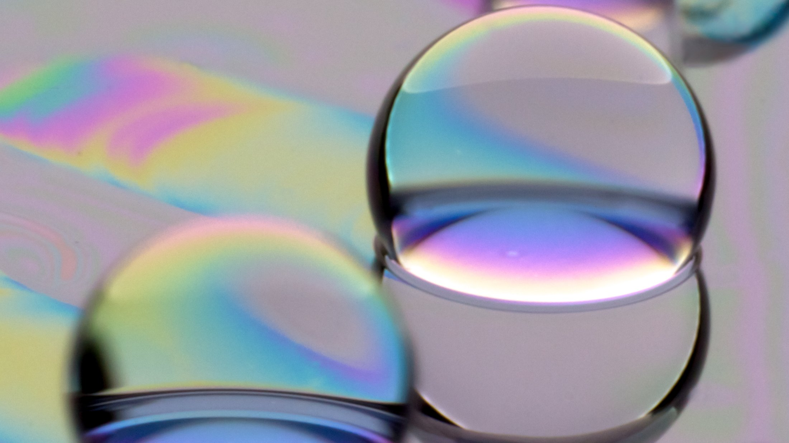
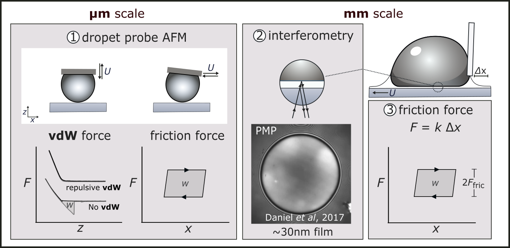

Ongoing Project
Surface engineering
Copying Nature's raincoats
A droplet bouncing off a lotus leaf.
Fakir droplets
The lotus leaf is the archetypal liquid-repellent surface. It’s covered by microscopic bumps that trap a thin cushion of air; the water droplet therefore floats on air, like a Fakir sitting on a bed of nails. This air cushion keeps the droplet from ever truly touching the leaf, so it beads up and rolls away. Scientists have copied this trick since the 1990s to make “superhydrophobic” (water-hating) surfaces, but they have yet to be adopted widely because the textures are fragile — a single scratch can ruin the effect entirely.

Oleoplaning droplets
In our lab, we are pursuing a fundamentally different strategy for liquid repellency. Rather than relying on surface texture, we apply a thin layer of oil to a flat substrate, stabilized entirely by van der Waals forces — the same weak, ubiquitous forces responsible for molecular attraction, which, under the right conditions, can instead act to keep a thin liquid film stable against rupture. Droplets placed on this film do not sit on a solid surface at all; instead, they glide over the nanometre-thin oil layer, a behavior we call oleoplaning, by analogy with hydroplaning. Our research investigates how van der Waals forces can sustain a stable, nanometre-thin oil film capable of achieving ultra-repellency without any need for surface texturing.

Multi-scale force measurements
Testing this idea requires measuring forces and distances at the nanonewton and nanometric scales. We employ a range of complementary techniques: droplet-probe atomic force microscopy (AFM) to directly measure the van der Waals forces at play, thin-film interferometry to visualize the nanoscale oil film, and a cantilever-based method to measure the friction forces experienced by millimetric droplets. We are among only a handful of research groups worldwide with the combined expertise to perform these delicate, high-precision measurements across such a wide range of length scales.
Why it matters
If this idea works, it could lead to water- and stain-repellent coatings that are far cheaper to manufacture, far more durable — no complicated fabrication, no fragile texturing required.